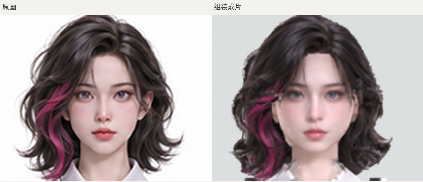
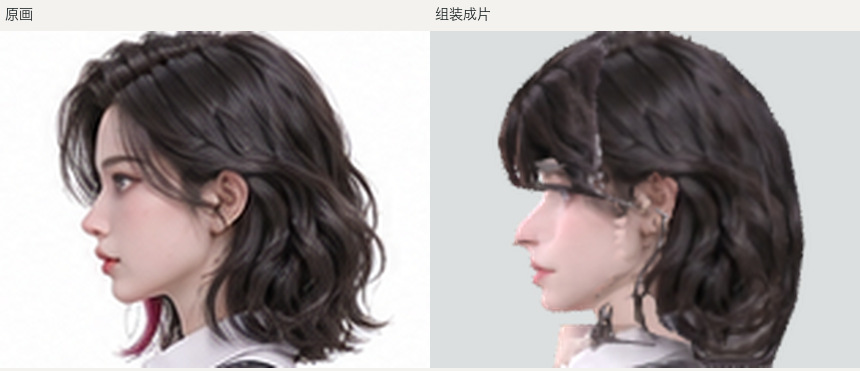
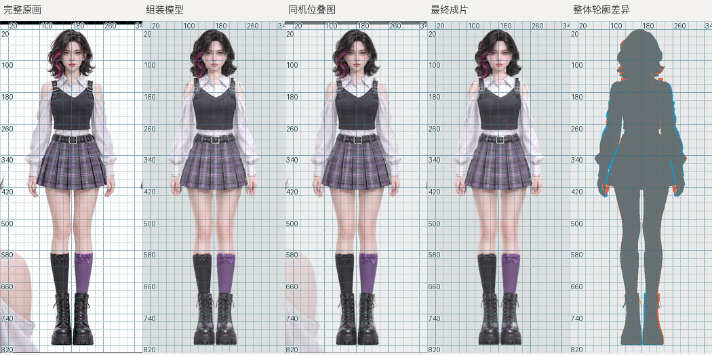
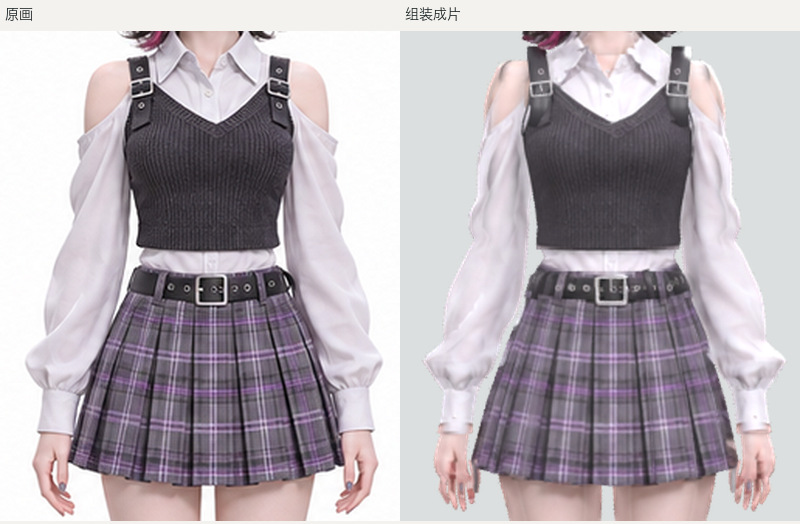
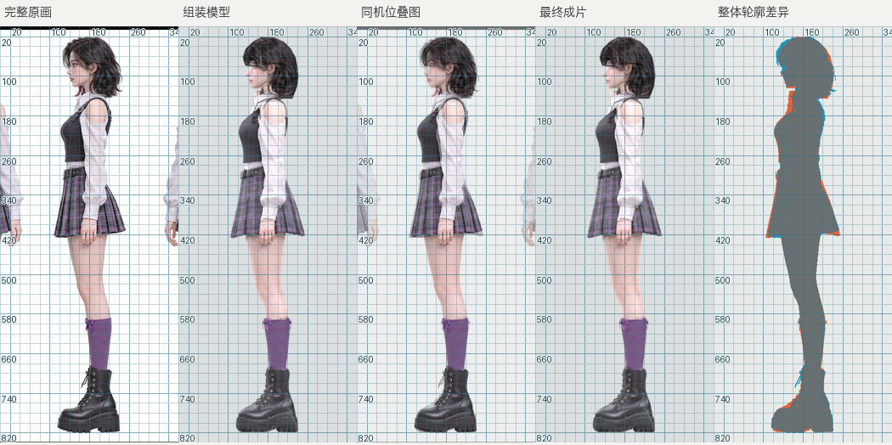
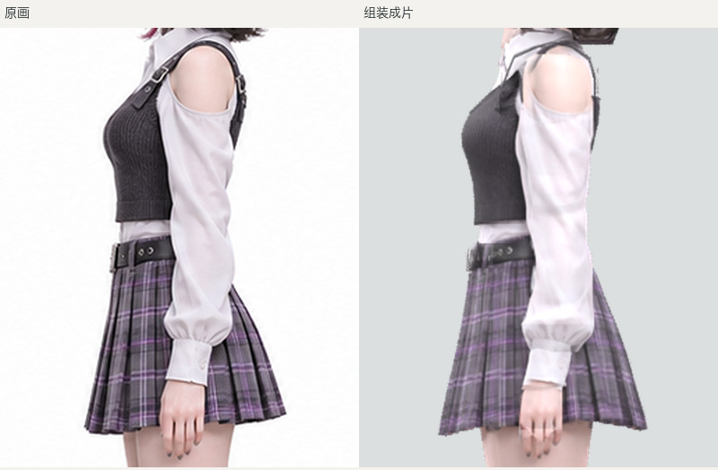
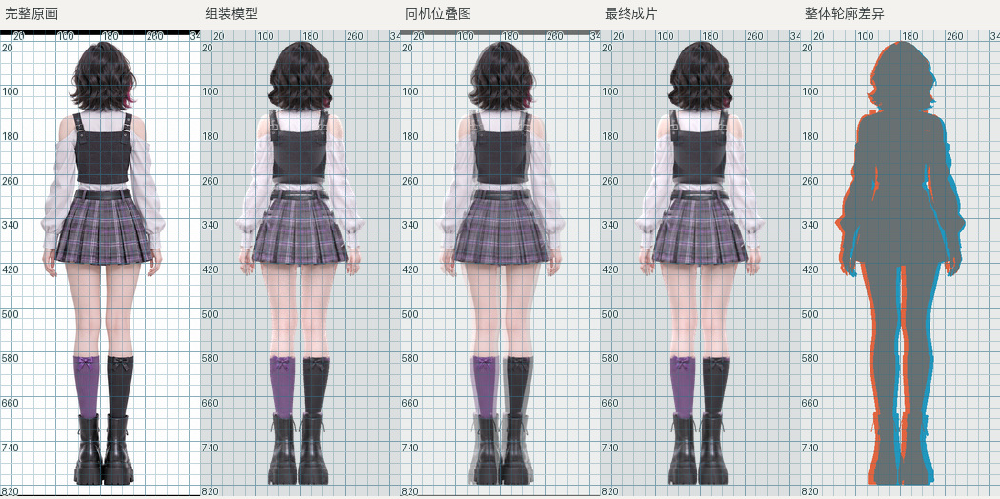
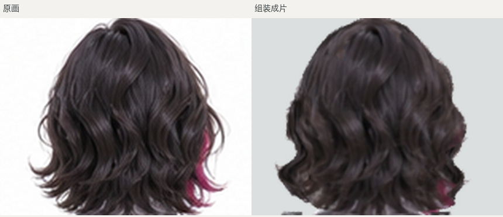
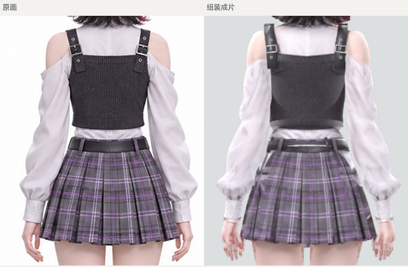

整体与逐件网格对照
蓝色为原画有而模型缺少的区域，橙色为模型多出的区域。灰色为重合，灰紫色为排除区。网格标注采用该栏原画的像素坐标，偏移为模型减原画，向右、向下为正。
逐段边界图中，白线连接模型边与原画目标，蓝圈标目标。红色表示搜索内缺边，紫色表示有多个候选，灰色表示画幅或遮挡证据不足。
完整测量记录
高精度对照 有部位需返修
本次覆盖 3/3 栏、3/3 件。已核对 0 项。
需返修 16 项 front 整体轮廓、front 可见发层、front 头脸与颈部、front 鞋履与鞋底、front 眉眼鼻唇、side 整体轮廓、side 可见发层、side 头脸与颈部、side 鞋履与鞋底、side 额鼻唇颏、back 整体轮廓、back 可见发层、back 头脸与颈部、back 鞋履与鞋底、back 后脑与领口、头脸与颈部多视图面部核对
待核对 3 项 front V领、露肩袖和格裙腰封、side V领、露肩袖和格裙腰封、back V领、露肩袖和格裙腰封
头脸与颈部 · 面部多视图
侧向机位符合配置，绕头部上下轴的夹角 +90.0°，侧面仰俯 -0.0°
正面 需返修
原图裁框 158 × 124 px

同位置细网格 颏点 偏差最大，1.26 px，修向原画 (+0.7, +1.1) px侧面 需返修
原图裁框 158 × 124 px

同位置细网格 颏前 偏差最大，6.32 px，修向原画 (+6.0, -2.0) px仍需处理的局部
front

需返修 原尺寸叠图 整体逐段边界定位轮廓交并比 0.953，缺少 2813 px²，多出 1938 px²
包围框左、上、右、下偏移 -1 / -1 / +2 / -1 px
原画沿法线找模型 最大 17.90 px，P95 7.07 px，匹配 3610/4210，搜索内缺边 299，多解 301，画幅不足 0
模型沿法线找原画 最大 17.94 px，P95 7.22 px，匹配 3671/4404，搜索内缺边 435，多解 298，画幅不足 0
最大可定位偏差处，模型 (130.0, 149.5) 向原画位移 (+17.8, -1.8) px造型与神态 需返修
眉眼鼻唇 需返修 挑染位置接近，面颊两侧发层厚度仍有偏差。对照标点 1 右外眼角 2 左外眼角 3 鼻尖 4 唇缝 5 颏点

V领、露肩袖和格裙腰封 待核对 分件
- 可见发层 需返修 整幅网格 · 局部网格 · 穿戴与遮挡 · 逐段边界定位
轮廓交并比 0.847，缺少 283 px²，多出 864 px²
包围框左、上、右、下偏移 -1 / -1 / -1 / +0 px
原画沿法线找模型 最大 18.00 px，P95 11.62 px，匹配 970/1192，搜索内缺边 173，多解 49，画幅不足 0
模型沿法线找原画 最大 14.97 px，P95 6.32 px，匹配 603/844，搜索内缺边 10，多解 231，画幅不足 0
最大可定位偏差处，模型 (214.3, 92.4) 向原画位移 (+18.0, +0.1) px
- 头脸与颈部 需返修 整幅网格 · 局部网格 · 穿戴与遮挡 · 逐段边界定位
轮廓交并比 0.732，缺少 919 px²，多出 247 px²
包围框左、上、右、下偏移 +29 / +16 / -24 / -11 px
原画沿法线找模型 最大 18.00 px，P95 12.12 px，匹配 314/926，搜索内缺边 578，多解 34，画幅不足 0
模型沿法线找原画 最大 15.88 px，P95 12.04 px，匹配 294/340，搜索内缺边 15，多解 31，画幅不足 0
最大可定位偏差处，模型 (214.0, 96.5) 向原画位移 (+18.0, +0.0) px
- 鞋履与鞋底 需返修 整幅网格 · 局部网格 · 穿戴与遮挡 · 逐段边界定位
轮廓交并比 0.890，缺少 550 px²，多出 684 px²
包围框左、上、右、下偏移 +1 / -3 / +1 / -1 px
原画沿法线找模型 最大 17.00 px，P95 5.33 px，匹配 691/810，搜索内缺边 18，多解 101，画幅不足 0
模型沿法线找原画 最大 17.20 px，P95 7.73 px，匹配 853/940，搜索内缺边 43，多解 44，画幅不足 0
最大可定位偏差处，模型 (227.5, 709.1) 向原画位移 (-1.3, +17.2) px
side

需返修 原尺寸叠图 整体逐段边界定位轮廓交并比 0.943，缺少 1443 px²，多出 2224 px²
包围框左、上、右、下偏移 -3 / +0 / +1 / -2 px
原画沿法线找模型 最大 17.99 px，P95 8.38 px，匹配 2469/2754，搜索内缺边 200，多解 85，画幅不足 0
模型沿法线找原画 最大 17.37 px，P95 7.37 px，匹配 2342/2580，搜索内缺边 102，多解 136，画幅不足 0
最大可定位偏差处，模型 (172.5, 740.1) 向原画位移 (-8.0, -16.1) px造型与神态 需返修
额鼻唇颏 需返修 唇周和下颌转折可辨，侧面的短卷发边缘较厚。对照标点 1 鼻尖 2 唇缘 3 颏前

V领、露肩袖和格裙腰封 待核对 分件
- 可见发层 需返修 整幅网格 · 局部网格 · 穿戴与遮挡 · 逐段边界定位
轮廓交并比 0.847，缺少 544 px²，多出 807 px²
包围框左、上、右、下偏移 +3 / +0 / -5 / +2 px
原画沿法线找模型 最大 17.76 px，P95 12.86 px，匹配 626/912，搜索内缺边 123，多解 163，画幅不足 0
模型沿法线找原画 最大 17.49 px，P95 10.02 px，匹配 531/808，搜索内缺边 70，多解 207，画幅不足 0
最大可定位偏差处，模型 (224.6, 145.9) 向原画位移 (+7.9, -15.9) px
- 头脸与颈部 需返修 整幅网格 · 局部网格 · 穿戴与遮挡 · 逐段边界定位
轮廓交并比 0.696，缺少 697 px²，多出 178 px²
包围框左、上、右、下偏移 +10 / +35 / -50 / -5 px
原画沿法线找模型 最大 17.65 px，P95 14.68 px，匹配 251/564，搜索内缺边 216，多解 97，画幅不足 0
模型沿法线找原画 最大 17.37 px，P95 13.04 px，匹配 298/468，搜索内缺边 83，多解 87，画幅不足 0
最大可定位偏差处，模型 (150.4, 69.8) 向原画位移 (-7.9, -15.8) px
- 鞋履与鞋底 需返修 整幅网格 · 局部网格 · 穿戴与遮挡 · 逐段边界定位
轮廓交并比 0.919，缺少 286 px²，多出 575 px²
包围框左、上、右、下偏移 +0 / -5 / -1 / -2 px
原画沿法线找模型 最大 17.99 px，P95 11.04 px，匹配 614/696，搜索内缺边 74，多解 8，画幅不足 0
模型沿法线找原画 最大 8.42 px，P95 5.60 px，匹配 497/550，搜索内缺边 1，多解 52，画幅不足 0
最大可定位偏差处，模型 (172.5, 740.1) 向原画位移 (-8.0, -16.1) px
back

需返修 原尺寸叠图 整体逐段边界定位轮廓交并比 0.826，缺少 9463 px²，多出 9102 px²
包围框左、上、右、下偏移 -9 / -2 / -1 / -1 px
原画沿法线找模型 最大 17.88 px，P95 12.47 px，匹配 3369/4044，搜索内缺边 396，多解 279，画幅不足 0
模型沿法线找原画 最大 17.98 px，P95 11.89 px，匹配 3586/4406，搜索内缺边 568，多解 252，画幅不足 0
最大可定位偏差处，模型 (223.1, 143.5) 向原画位移 (+17.2, -5.4) px造型与神态 需返修

后脑与领口 需返修 黑粉发尾与露肩袖清楚，发梢外翻处较粗。
V领、露肩袖和格裙腰封 待核对 分件
- 可见发层 需返修 整幅网格 · 局部网格 · 穿戴与遮挡 · 逐段边界定位
轮廓交并比 0.893，缺少 355 px²，多出 905 px²
包围框左、上、右、下偏移 -4 / -2 / -4 / +1 px
原画沿法线找模型 最大 17.19 px，P95 10.43 px，匹配 663/826，搜索内缺边 141，多解 22，画幅不足 0
模型沿法线找原画 最大 17.29 px，P95 7.83 px，匹配 432/558，搜索内缺边 11，多解 115，画幅不足 0
最大可定位偏差处，模型 (120.1, 115.5) 向原画位移 (+16.8, -3.9) px
- 头脸与颈部 需返修 整幅网格 · 局部网格 · 穿戴与遮挡 · 逐段边界定位
轮廓交并比 0.000，缺少 247 px²，多出 0 px²
原画沿法线找模型 无确定对应，匹配 0/218，搜索内缺边 218，多解 0，画幅不足 0
模型沿法线找原画 无确定对应，匹配 0/0，搜索内缺边 0，多解 0，画幅不足 0
- 鞋履与鞋底 需返修 整幅网格 · 局部网格 · 穿戴与遮挡 · 逐段边界定位
轮廓交并比 0.643，缺少 2344 px²，多出 2289 px²
包围框左、上、右、下偏移 -11 / -6 / -12 / -1 px
原画沿法线找模型 最大 17.50 px，P95 14.63 px，匹配 567/724，搜索内缺边 78，多解 79，画幅不足 0
模型沿法线找原画 最大 17.77 px，P95 13.90 px，匹配 754/934，搜索内缺边 164，多解 16，画幅不足 0
最大可定位偏差处，模型 (131.5, 712.0) 向原画位移 (+10.7, +14.2) px